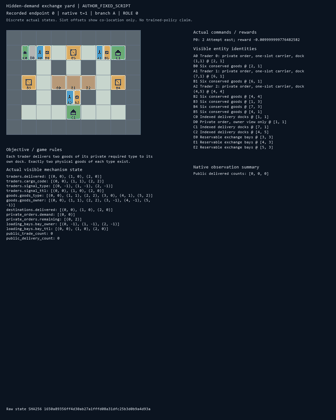
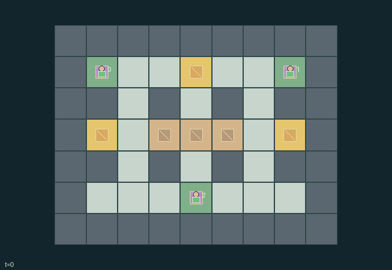

GI117 · Hidden-demand exchange yard

Original recording scope: Role view · Mode: Fixed-script demonstration
Additional generated state replay (different trajectory / full-state debug)

Each trader delivers two goods of its private required type to its own dock. Exactly two physical goods of each type exist.
Identity and original contract
3 independently actionable roles; 15 discrete commands per role; 150 native observation columns per role; original horizon 160 steps. Declared per-step reward range: -1.0 to 6.0. Observation regime: partially_observable.
Source SHA-256: 5726fbbef820541fcb14591d64f11730f02c4feccf98b7305bd5f8bd63c4ad60
The objective, rewards, population, map and horizon remain original. A preview is not a success claim.
Objective and gameplay
Each trader delivers two goods of its private required type to its own dock. Exactly two physical goods of each type exist.
One-slot inventory, narrow routes, public reservations and escrow commitments constrain others. Offers bind existing carried goods at loading bays. Reciprocal offers atomically swap a pair; if no pair clears, a compatible three-way cycle can clear atomically. No goods are copied or created.
- Every trader has one carrying slot and needs two units of its private type at its indexed dock. Six identified goods exist: two of each type.
- The map, cargo types, goods and bay reservations are public. Other traders private orders remain hidden until their actions reveal information.
- Action thirteen broadcasts the speakers actual private demand for five ticks. Silence leaves that order private.
- An offer is posted only while carrying a good on an exchange bay. It commits the actual good for four displayed ticks and prevents movement, pickup, drop and delivery while active.
- Reciprocal compatible offers settle atomically; a three-way compatible cycle may clear when no bilateral pair does. Trading itself has zero reward.
- Reservations last six displayed ticks and block another trader from entering that bay. Renewing or cancelling uses a turn.
- Natural completion requires all six deliveries. An individually completed trader becomes inactive and accepts only wait.
- Replay and role-view privacy still require independent execution; this is an authored hypothesis, not an accepted game result.
Ending: All three traders have delivered two goods; otherwise truncate at tick 160. A finished trader is inactive and accepts only wait.
What this game explores
Information, sensing & communication: Who knows a fact, when it was measured, and whether it was communicated are separate state variables. Test memory or communication using only the same role-visible evidence.
Commitment, exchange & governance: Promises consume time, liquidity, access or material. Separate an announced agreement from a binding commitment and from its eventual delivery; log cancellation and expiry too.
Joint transport & shared access: Positions, load geometry, occupancy and persistent access constrain whose action can succeed next. Distinguish physical handoff, shared controls and simultaneous force from a cosmetic cooperation label.
These are questions supported by rule structure, not observed learning effects.
Play it: operating walkthrough
crucibles play --game gi117Keep Python running and open its printed address. Select this game, set a seed and press Create session. The game itself is always English.
Assign a role range to Host with Assign / take over, or Assign all roles. Invite a second participant with Create player invitation, then assign a disjoint subset. Every original role is available.
For every owned role choose a legal command and press Queue. Arrow keys / WASD queue a declared directional action for the current role camera when available. Space or Advance one joint step advances everyone together. Non-directional games use the selectors.
Unqueued roles use the labelled untrained uniform-legal policy. Take over or release roles before the next step without resetting. Full-state debug is privileged and permanently logged; role cameras preserve permissions. Close the session to retain logs. Server restart does not restore sessions.
Complete command reference
IDs and English labels exactly match the manifest. Availability depends on role, resources, location and phase. An available action can still have no productive effect.
0·Wait
1·Attempt north
2·Attempt east
3·Attempt south
4·Attempt west
5·Pick up one nearby ground good if empty
6·Drop carried good at current cell
7·Deliver matching good at own dock
8·Reserve or renew a nearby free loading bay
9·Release own bay reservation
10·Post carried good requesting type zero
11·Post carried good requesting type one
12·Post carried good requesting type two
13·Truthfully reveal own demand for five ticks
14·Cancel own escrow offer
Roles and capability identifiers
These original role names describe capabilities, not interchangeable skins. Check each owned role's legal selector before planning handoffs.
agent_0·Trader 0: private order, one-slot carrier, dock (1,1)
agent_1·Trader 1: private order, one-slot carrier, dock (7,1)
agent_2·Trader 2: private order, one-slot carrier, dock (4,5)
Information and observation permissions
Each role sees all public yard, physical goods, reservations, posted offers and deliberately broadcast truthful signals, plus only its own private demand one-hot. Private order entities have identity-matrix visibility. A reveal action or an observed delivery may legitimately disclose demand; hidden order fields never enter another row or public scene attribute.
The GIF is full-state debug and may reveal hidden entities or private state. Train on obs[agent], not the picture, state tree or another role's private row. Field slices and visibility are in the original manifest.
Reinforcement-learning integration
import jax
from crucibles_jaxmarl import make
env = make("gi117")
key = jax.random.PRNGKey(0)
key, rk, ak, sk = jax.random.split(key, 4)
obs, state = jax.jit(env.reset)(rk)
actions = env.sample_actions(ak, state)
obs, state, rewards, dones, info = jax.jit(env.step_env)(sk, state, actions)
done = dones["__all__"]Observations are float32 vectors of width 150; actions are scalar int32; masks have 15 entries. Supply all 3 roles each transition. Masked sampling is an engineering reference, not a trained learner.
step_env retains terminal data without reset. step performs outer autoreset and keeps terminal data in info["raw_state"] and info["raw_observation"]. Use dones["__all__"] for episode boundaries; separate completion, failure and time limit in analysis.
JIT or vmap equal identities and shapes. Split independent reset, policy and transition keys. Group different shapes explicitly; do not shrink the population or horizon. Host rendering stays outside training.
Training questions and fair evaluation
Define valid completion from the objective before fitting. Preserve original rewards and also report real deliveries/services, losses, resource state, unresolved episodes and per-role returns. Animation is not a reward signal.
Who knows a fact, when it was measured, and whether it was communicated are separate state variables. Test memory or communication using only the same role-visible evidence.
Promises consume time, liquidity, access or material. Separate an announced agreement from a binding commitment and from its eventual delivery; log cancellation and expiry too.
Positions, load geometry, occupancy and persistent access constrain whose action can succeed next. Distinguish physical handoff, shared controls and simultaneous force from a cosmetic cooperation label.
Compare memory, communication or centralized critics under matched actor information. Declare critic access; keep actor inputs role-filtered. Match partner/opponent distributions, masks, compute and checkpoint selection. Final tests never enter fitting or selection.
Independent training runs or source-pairing blocks are inferential units; episodes from one policy are not independent training replications. Save hashes, keys, versions, device, time and cost. Negative, zero, failed and indeterminate outcomes are valid. No trained checkpoint or target score is supplied.
Classification and evidence
Overlapping editorial labels are reading aids, not proof of novelty, difficulty, strategic equivalence or learning effects.
- Information, sensing & communication
- Evidence
manifest.task.objective: Each trader delivers two goods of its private required type to its own dock. Exactly two physical goods of each type exist.
- Evidence
manifest.task.observation_access: Each role sees all public yard, physical goods, reservations, posted offers and deliberately broadcast truthful signals, plus only its own private demand one-hot. Private order entities have identity-matrix visibility. A reveal action or an observed delivery may legitimately disclose demand; hidden order fields never enter another row or public scene attribute.
- Evidence
manifest.actions.13: Truthfully reveal own demand for five ticks
- Commitment, exchange & governance
- Evidence
manifest.task.interaction: One-slot inventory, narrow routes, public reservations and escrow commitments constrain others. Offers bind existing carried goods at loading bays. Reciprocal offers atomically swap a pair; if no pair clears, a compatible three-way cycle can clear atomically. No goods are copied or created.
- Evidence
manifest.task.observation_access: Each role sees all public yard, physical goods, reservations, posted offers and deliberately broadcast truthful signals, plus only its own private demand one-hot. Private order entities have identity-matrix visibility. A reveal action or an observed delivery may legitimately disclose demand; hidden order fields never enter another row or public scene attribute.
- Evidence
manifest.actions.9: Release own bay reservation
- Joint transport & shared access
- Evidence
manifest.task.objective: Each trader delivers two goods of its private required type to its own dock. Exactly two physical goods of each type exist.
- Evidence
manifest.task.interaction: One-slot inventory, narrow routes, public reservations and escrow commitments constrain others. Offers bind existing carried goods at loading bays. Reciprocal offers atomically swap a pair; if no pair clears, a compatible three-way cycle can clear atomically. No goods are copied or created.
- Evidence
manifest.task.observation_access: Each role sees all public yard, physical goods, reservations, posted offers and deliberately broadcast truthful signals, plus only its own private demand one-hot. Private order entities have identity-matrix visibility. A reveal action or an observed delivery may legitimately disclose demand; hidden order fields never enter another row or public scene attribute.
Source, receipts and preview limits
The additional generated state GIF replays saved untrained legal actions through the original kernel. At most 25 actual endpoints include initial and terminal state; no invented interpolation. It is full-state debug, not the role observation. Where an original scene preview exists, it is displayed first with its own recorded information scope. The two recordings may use different trajectories and views.
Original source, observation slices, manifest and mechanism
Native receipt · Presentation receipt
Engineering passes do not establish learning. Nonzero floating differences remain recorded and undetermined; no new tolerance was introduced. Human scores remain unverified.